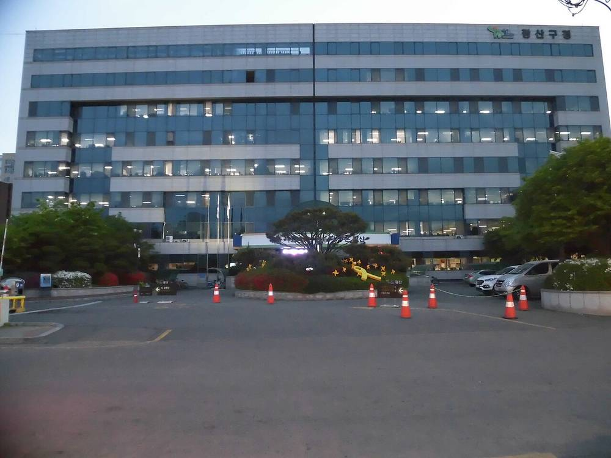

광주 광산구, 온실가스 줄인 아파트 6곳에 3,600만 원…LED 교체·태양광 설치 지원

탄소중립포인트제 가입률·주민 실천 평가해 선정, 500세대 이상 부문 대상 신창도시공사 국민임대아파트 1,100만 원
전남광주통합특별시 광산구가 온실가스 감축 실천이 뛰어난 아파트 6곳을 골라 시설 개선비로 지방보조금 모두 3,600만 원을 주기로 했다. '온실가스 감축 우수아파트 지원사업'은 공동주택 주민의 에너지 절약 참여를 끌어내려는 사업으로, 구는 지난 3월 공모를 거쳐 탄소중립포인트제 가입률과 주민 참여·실천 노력을 종합해 평가했다. 500세대 이상 부문에서는 대상인 신창도시공사 국민임대아파트가 1,100만 원을, 우수상인 수완아름마을휴먼시아3단지와 광주선운희망타운2단지가 각각 700만 원을 받는다. 500세대 미만 부문에서는 대상인 AM-City센트럴파크2차가 500만 원, 우수상인 어등산대광로제비앙퍼스트뷰와 신촌동대주파크빌이 각각 300만 원을 받는다. 선정된 아파트는 이 돈으로 발광다이오드(LED) 조명을 바꾸거나 태양광 발전설비를 다는 등 에너지 효율을 높이는 공사를 한다. 구는 주민이 일상에서 실천한 탄소중립 노력을 시설 개선으로 이어 준다는 데 의미가 있다며 공동주택 중심의 지원을 계속하겠다고 밝혔다.
시민에너지 관점
3,600만 원은 아파트 6곳이 조명 몇 개를 바꾸고 작은 태양광을 다는 데 그칠 돈이다. 남호주가 공동주택 공동 태양광·배터리에 설치비 절반 보조와 나머지 무이자 융자를 묶어 단지당 최대 9만5,000호주달러까지 길을 열어 준 것과 견주면 규모부터 다르다. 주민들이 이미 탄소중립포인트로 실천 의지를 보였다면, 다음 단계는 단지 옥상과 주차장에 주민이 함께 출자하는 공동 발전소를 세워 관리비를 낮추고 수익을 나누는 것이다. 광산구는 포상형 보조금을 넘어 아파트 공동체 발전 사업을 위한 융자와 상담 창구를 열어야 한다.
출처: 투데이광주전남 2026-11-15 신종천 원문 보기
光州・光山区、温室効果ガスを減らしたマンション6カ所に3,600万ウォン…LED交換・太陽光設置を支援
炭素中立ポイント制の加入率・住民の実践を評価して選定、500世帯以上部門の大賞・新昌都市公社国民賃貸アパートに1,100万ウォン
全南光州統合特別市光山区は、温室効果ガス削減の実践に優れたマンション6カ所を選び、施設改善費として地方補助金計3,600万ウォンを交付することを決めた。「温室効果ガス削減優秀マンション支援事業」は共同住宅の住民の省エネ参加を促す事業で、区は3月の公募を経て、炭素中立ポイント制の加入率と住民の参加・実践の努力を総合的に評価した。500世帯以上の部門では大賞の新昌都市公社国民賃貸アパートが1,100万ウォンを、優秀賞の2団地がそれぞれ700万ウォンを受け取る。500世帯未満の部門では大賞の団地が500万ウォン、優秀賞の2団地がそれぞれ300万ウォンを受け取る。選ばれたマンションはこの資金で発光ダイオード（LED）照明への交換や太陽光発電設備の設置など、エネルギー効率を高める工事を行う。区は住民が日常で実践した炭素中立の努力を施設改善につなげる点に意義があるとし、共同住宅を中心とした支援を続ける方針を示した。
市民エネルギーの視点
3,600万ウォンは、マンション6カ所が照明をいくつか替え、小さな太陽光を付ける程度で終わる金額だ。南オーストラリア州が集合住宅の共同太陽光・蓄電池に設置費の半額補助と残りの無利子融資を組み合わせ、1棟あたり最大9万5,000豪ドルまで道を開いたのと比べると、規模からして違う。住民がすでに炭素中立ポイントで実践の意思を示したのなら、次の段階は団地の屋上や駐車場に住民が共同出資する共同発電所を建て、管理費を下げて収益を分け合うことだ。光山区は表彰型の補助金を超え、マンション共同体の発電事業のための融資と相談の窓口を開くべきだ。
出典: 투데이광주전남 2026-11-15 신종천 原文を読む
光州光山区向6个减排公寓小区拨款3,600万韩元……支持更换LED与安装太阳能
按碳中和积分制加入率与居民实践评选，500户以上组大奖新昌都市公社国民租赁公寓获1,100万韩元
全南光州统合特别市光山区选出6个在温室气体减排实践方面表现突出的公寓小区，决定发放共计3,600万韩元地方补助金用于设施改善。"温室气体减排优秀公寓支持项目"旨在鼓励共同住宅居民参与节能，区政府3月公开征集后，综合评估了碳中和积分制加入率以及居民参与和实践情况。500户以上组中，大奖新昌都市公社国民租赁公寓获1,100万韩元，两个优秀奖小区各获700万韩元。500户以下组中，大奖小区获500万韩元，两个优秀奖小区各获300万韩元。入选小区将用这笔资金更换发光二极管（LED）照明、安装太阳能发电设备等，以提高能效。区政府表示，此举的意义在于把居民日常的碳中和努力转化为设施改善，今后将继续以共同住宅为中心提供支持。
市民能源视角
3,600万韩元只够6个小区换几盏灯、装一点小型太阳能。南澳大利亚州为公寓楼共享太阳能和电池提供一半安装补贴，其余以无息贷款补足，每栋最多可获9万5,000澳元，两者规模不可同日而语。既然居民已通过碳中和积分展示了行动意愿，下一步就应在小区屋顶和停车场建设居民共同出资的社区电站，降低物业费并分享收益。光山区应超越奖励式补贴，为公寓社区发电项目开设贷款和咨询窗口。
来源: 투데이광주전남 2026-11-15 신종천 查看原文
Gwangju's Gwangsan district awards 36 million won to six apartment complexes that cut emissions, funding LED and solar upgrades
Winners chosen on carbon-neutral point sign-up rates and residents' efforts; top prize in the 500-plus-household category, a public rental complex in Sinchang, gets 11 million won
Gwangsan District in the integrated Jeonnam-Gwangju special city has picked six apartment complexes with strong records on cutting greenhouse gases and will give them a combined 36 million won in local subsidies for facility upgrades. The program aims to draw apartment residents into saving energy; after an open call in March, the district assessed each complex on its sign-up rate for the national carbon-neutral point scheme and on residents' participation and effort. In the category of 500 households or more, the top-prize public rental complex in Sinchang receives 11 million won, while two runners-up get 7 million won each. In the under-500 category, the top-prize complex receives 5 million won and two runners-up get 3 million won each. The complexes will use the money for efficiency work such as switching to LED lighting or installing solar panels. The district said the program turns residents' everyday climate efforts into building improvements and that it will keep focusing support on apartment housing.
Citizen Energy View
Thirty-six million won will cover little more than new light fittings and a few small solar panels across six complexes. South Australia, by contrast, pairs a 50% subsidy with a zero-interest loan for the rest so that each apartment building can access up to A$95,000 for shared solar and batteries. If residents have already shown their commitment through carbon-neutral points, the next step is a community power plant on rooftops and parking lots that residents co-own, cutting maintenance fees and sharing the returns. Gwangsan should move beyond prize-style grants and open a lending and advisory window for apartment community energy projects.
Source: 투데이광주전남 2026-11-15 신종천 Read the original